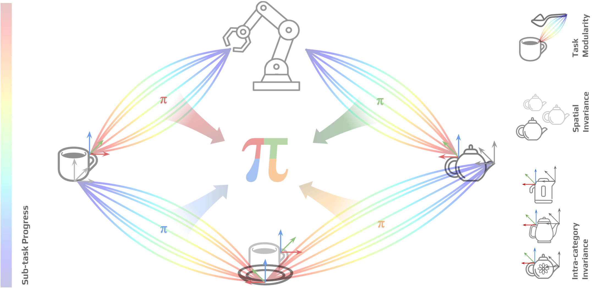
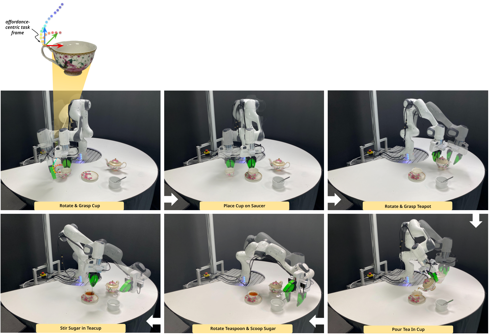
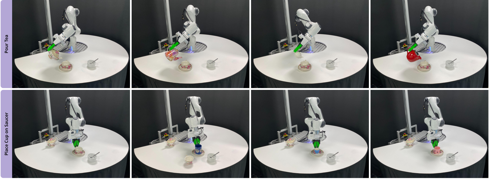
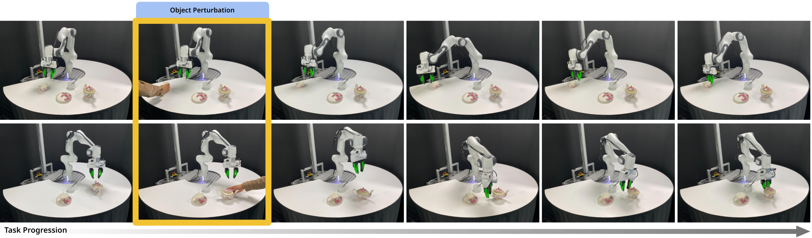

Affordance-Centric Policy Decomposition : Generalisable and Sample Efficient Robot Policy Learning for Multi-Object, Long-Horizon Manipulation
Abstract
Long-horizon manipulation tasks involving multiple different objects present several challenges for imitation learning, with resulting policies exhibiting poor sample efficiency, generalisation, and modularity. Central to these limitations is the use of images and absolute coordinate systems to capture the state of the world. Without extensive demonstration datasets, these representations constrain the policy to operate over a closed set of spatial locations, intra-category instances, and even task variations. In this paper, we present a method to address these challenges using affordance-centric coordinate frames. By appropriately reorienting this frame and training a state-based policy using this relative coordinate system, we demonstrate that we can not only learn highly sample-efficient manipulation behaviours but also generalise to a wide range of spatial and intra-category object variations. More importantly, we show that this representation allows us to learn independent sub-policies that can be seamlessly composed together to solve complex, long-horizon, multi-object tasks, with the modularity for compositional generalisation to new task variations. We extensively validate our approach on a real-world tea-serving task involving 5 different objects, 13 intra-category object variations, and 7 different sub-tasks exhibiting a vast range of spatial variations, demonstrating our ability to solve the entire long-horizon task with the equivalent of only 10 demonstrations.
Overview

We train a series of sample-efficient diffusion sub-policies that exhibit spatial and intra-category invariance, leveraging local affordance-centric task-frames anchored to objects. By orienting these relative frames across subtasks, we ensure the robot consistently operates within the data support of the subsequent sub-policy. This methodology allows for seamless composition of sub-policies to tackle complex long-horizon tasks. Additionally, each sub-policy's action-space is augmented to include a notion of self-progress, enabling autonomous transitions between sub-policies upon sub-task completion eliminating the need for a learned arbitrator.
Please refer to attached supplementary material (.zip) for more results and details.
Long-Horizon Manipulation

We can seamlessly compose a series of sub-policies to solve complex, long-horizon, multi-object manipulation tasks. Each sub-policy is trained with respect to its own affordance-centric task-frame as shown above. The resulting spatial invariance allows for compositional generalisation to a wide range of object and inter-object spatial variations when solving long-horizon, multi-object tasks.
Spatial Generalisation

Intra-Category Generalisation

Closed-Loop Control
